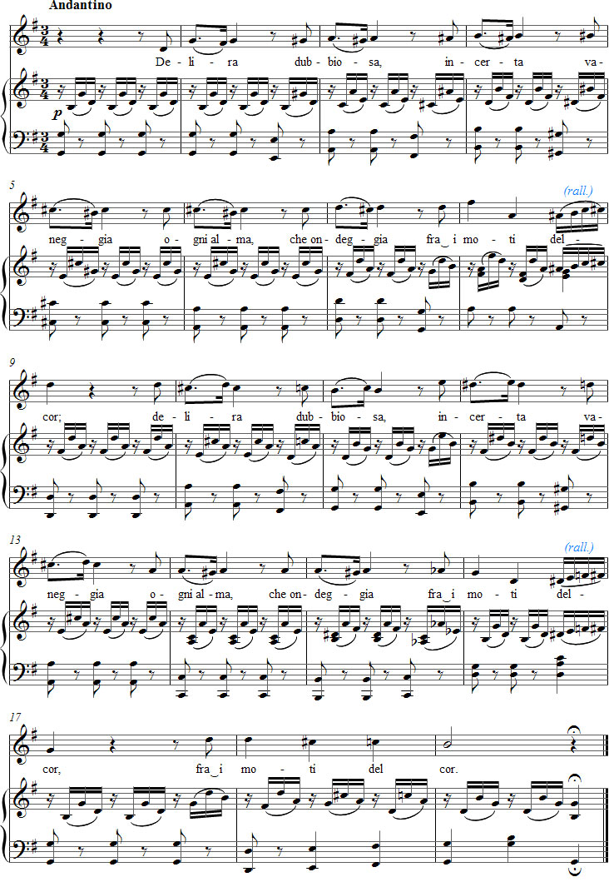

Vaccaj: Tehtävä 5
Kuuntele äänite
Nuotit

Sanat
I semitoni
Puolisävelaskeleet
hourailee epäröivänä sydämen
tuskien keskellä.
Esitysohjeet
Tässä tehtävässä harjoitellaan pientä sekunti-intervallia eli puolisävelaskelta, joka on kromaattisen asteikon perusta. Näitä puolisävelaskeleita esiintyy yhteensä 46 kappaletta laulun 19 tahdissa. Puolisävelaskeleet saavat tehtävän melodiassa esiintyvät yksinkertaiset toistot huomattavasti nautittavammaksi. Voit kokeilla kuinka niukalta laulu kuulostaa ilman kuudestoistaosia.
Vaccajn valitsema runo kuvaa epävarmuuden ja epäröinnin tunteita ja sopii siksi myös kromatiikan harjoittelemiseen. Kuusitavuisen runon pysyvien painotuspaikkojen ansiosta teksti ja musiikki sulautuvat saumattomasti yhteen.
Ohjeita harjoitteluun
Harjoittele aluksi laulamalla pisteellinen kahdeksasosa- ja kuudestoistaosanuotit neljäsosina. Tee samoin neljän kuudestoistaosanuotin kanssa. Lisää sitten Metastasion teksti yksinkertaistettuun melodiaan. Yritä välttää useilla lopputavuilla esiintyvien a-vokaalien painottamista.
Kun myöhemmin siirrytään laulamaan nuottikuvan mukaisesti, täytyy varoa etteivät kuudestoistaosat tule liian merkitseviksi. Kaikkien lyhyiden äänten tulee vaikuttaa kevyiltä niin laulajalla kuin pianistillakin.
Jos hengittäminen tuntuu hätäiseltä, voit nipistää hieman tahdin toiselle neljäsosalle osuvasta loppusävelestä.
Pianistin täytyy niin pian kuin mahdollista lopettaa soittamasta unisonossa laulajan kanssa neljä puolisävelaskelta 8. ja 16. tahdin lopussa, koska muutoin on vaara, että laulaja tukeutuu liikaa pianon ääneen.
Ajatuksia tulkinnasta
Anna andantinon olla aluksi hidas ja mietteliäs. Voit ajan mittaan tehdä siitä halutessasi neuroottisemman.
Kuten laulunopettajat tietävät, kromaattiset harjoitukset ovat lyömätön apukeino mm. hiottaessa sävelpuhtautta. Kromaattisen ja diatonisen asteikon pitäisi olla osa jokapäiväistä harjoittelua.
Forshufvud, G. 1994. Con lieve fiato. Lärarhandledning till Nicola Vaccajs Metodo pratico. Göteborgs universitetet.